Road signs of Spain are based on European Union regulations so that they are, if not the same, similar in all countries of the EU (Vienna Convention). Due to the importance of road safety, there is an international agreement to maintain the same format in vertical signage. Thus, although each country makes slight variations in the type of signals, the most important signals remain in common: stop, give way, etc. Speed limit signs are the same throughout Europe as well as the indication signs.
The types of warning signs, with their respective codes and meanings, are:
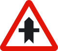
P-1. Junction with priority
Danger due to the proximity of a junction with a road whose users must give way.
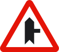
P-1a. Junction with priority over road on the right
Danger due to the proximity of a junction with a road on the right whose users must give way.
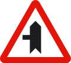
P-1b. Junction with priority over road on the left
Danger due to the proximity of a junction with a road on the left whose users must give way.
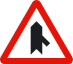
P-1c. Junction with priority over merging road from the right
Danger due to the proximity of a merging lane from the right whose users must give way.
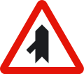
P-1d. Junction with priority over merging road from the left
Danger due to the proximity of a merging lane from the left whose users must give way.
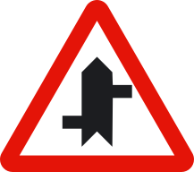
P-1e. Section with direct accesses
Danger due to the proximity of a section where there are several direct accesses to the road; users of such accesses must give way.
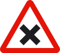
P-2. Junction with priority from the right
Danger due to the proximity of a junction where the general rule of priority to the right applies.
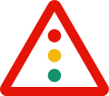
P-3. Traffic signals
Danger due to the proximity of an isolated junction or section where traffic is controlled by traffic lights.
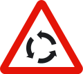
P-4. Junction with circular traffic
Danger due to the proximity of a junction where traffic circulates in a roundabout in the direction indicated by the arrows.
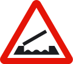
P-5. Movable bridge
Danger due to the proximity of a bridge that can be raised or pivoted, temporarily interrupting traffic.
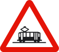
P-6. Tramway crossing
Danger due to the proximity of a crossing with a tram line which has priority.
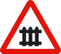
P-7. Level crossing with gates
Danger due to the proximity of a level crossing equipped with gates or half-barriers.
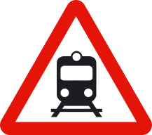
P-8. Level crossing without gates
Danger due to the proximity of a level crossing not equipped with gates or half-barriers.
P-9a. Advance sign for level crossing, movable bridge or quay (200 metres, right side)
Placed on the right-hand side to indicate the proximity of a danger signifying a level crossing, quay or movable bridge, at a distance of 200 metres between it and the corresponding warning sign.
P-9b. Advance sign for level crossing, movable bridge or quay (150 metres, right side)
Placed on the right-hand side to indicate the approach to a level crossing, quay or movable bridge, at a distance of 150 metres between it and the corresponding warning sign.
P-9c. Advance sign for level crossing, movable bridge or quay (100 metres, right side)
Placed on the right-hand side to indicate the vicinity of a level crossing, quay or movable bridge, at a distance of 100 metres between it and the corresponding warning sign.
P-10a. Advance sign for level crossing, movable bridge or quay (200 metres, left side)
Placed on the left-hand side to indicate the proximity of a danger signifying a level crossing, quay or movable bridge, at a distance of 200 metres between it and the corresponding warning sign.
P-10b. Advance sign for level crossing, movable bridge or quay (150 metres, left side)
Placed on the left-hand side to indicate the approach to a level crossing, quay or movable bridge, at a distance of 150 metres between it and the corresponding warning sign.
P-10c. Advance sign for level crossing, movable bridge or quay (100 metres, left side)
Placed on the left-hand side to indicate the vicinity of a level crossing or movable bridge, at a distance of 100 metres between it and the corresponding warning sign.
P-11. Position of level crossing without gates
Danger due to the immediate presence of a level crossing without gates.
P-11a. Position of level crossing without gates with more than one track
Danger due to the immediate presence of a level crossing without gates with more than one railway track.
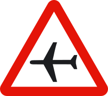
P-12. Airport
Danger due to the proximity of a place where aircraft frequently fly at low altitude over the road.
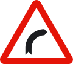
P-13a. Dangerous bend to the right
Danger due to the proximity of a dangerous bend to the right.
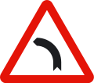
P-13b. Dangerous bend to the left
Danger due to the proximity of a dangerous bend to the left.
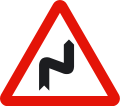
P-14a. Series of dangerous bends, first to the right
Danger due to the proximity of a series of bends close together; the first one bends to the right.
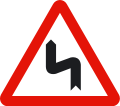
P-14b. Series of dangerous bends, first to the left
Danger due to the proximity of a series of bends close together; the first one bends to the left.
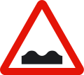
P-15. Uneven road
Danger due to the proximity of a hump or bump in the road or a roadway in poor condition.
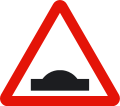
P-15a. Hump
Danger due to the proximity of a hump in the road.
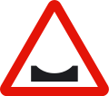
P-15b. Dip
Danger due to the proximity of a dip in the road.
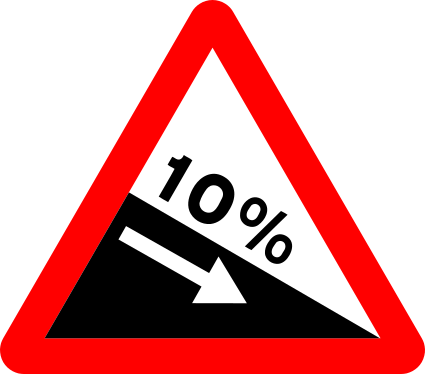
P-16a. Dangerous descent
Danger due to the presence of a section of road with a steep downhill gradient. The figure indicates the gradient in percent.
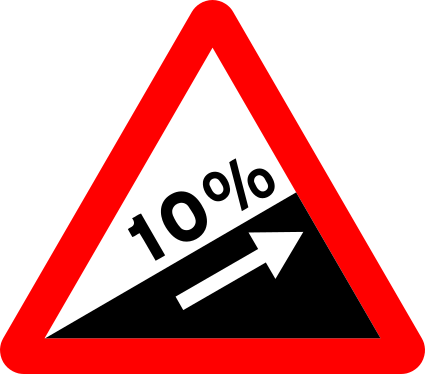
P-16b. Steep ascent
Danger due to the presence of a section of road with a steep uphill gradient. The figure indicates the gradient in percent.
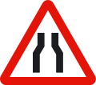
P-17. Road narrows
Danger due to the possibility of a section of road where the carriageway narrows.
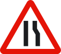
P-17a. Road narrows on the right
Danger due to the proximity of a section of road where the carriageway narrows on the right-hand side.
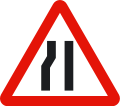
P-17b. Road narrows on the left
Danger due to the proximity of a section of road where the carriageway narrows on the left-hand side.
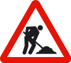
P-18. Road works
Danger due to the proximity of a section of road under construction or maintenance.
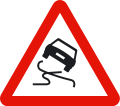
P-19. Slippery road surface
Danger due to the proximity of a section of carriageway whose surface may be very slippery.
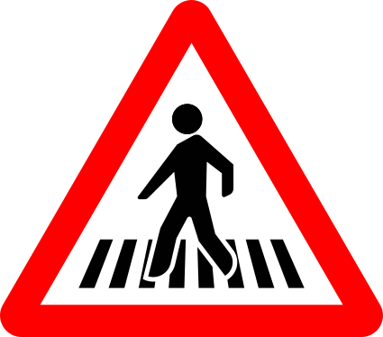
P-20a. Pedestrian crossing
Danger due to the proximity of one or more pedestrian crossings.
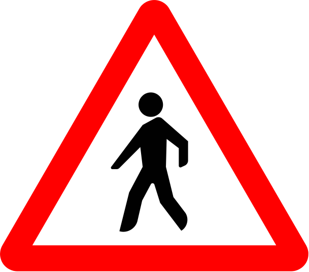
P-20b. Pedestrians
Danger due to the proximity of a place or section with high pedestrian traffic.
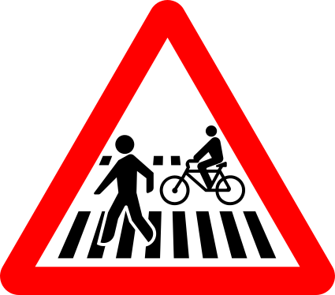
P-20c. Pedestrian and cycle crossings
Danger due to the proximity of a pedestrian crossing adjoining or shared with a cycle crossing.
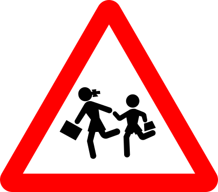
P-21a. Children
Danger due to the proximity of a place frequented by children, such as schools, playgrounds, etc.
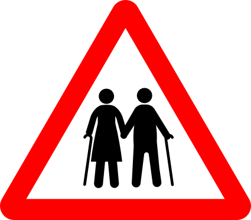
P-21b. People with reduced mobility
Danger due to the proximity of a place frequented by people with mobility or sensory difficulties.
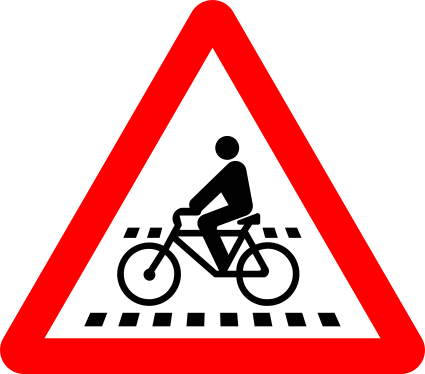
P-22a. Cycle crossing
Danger due to the presence of one or more cycle crossings.
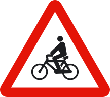
P-22b. Cyclists
Danger due to the proximity of a section with frequent bicycle traffic.
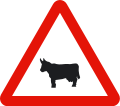
P-23. Crossing of domestic animals
Danger due to the proximity of a place where the road may frequently be crossed by domestic animals.
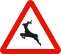
P-24. Crossing of wild animals
Danger due to the proximity of a place where the road may frequently be crossed by wild animals.
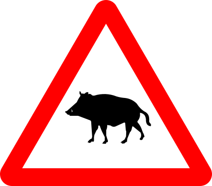
P-24a. Crossing of wild animals (wild boar)
Danger due to the proximity of a place where the road may frequently be crossed by wild animals, a very significant proportion of which are wild boar.
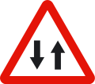
P-25. Two-way traffic
Danger due to the proximity of a section of carriageway where traffic runs, temporarily or permanently, in both directions.
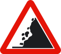
P-26. Falling rocks
Danger due to the proximity of a section with frequent rockfalls and the possible presence of obstacles on the carriageway.
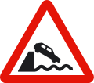
P-27. Quay
Danger because the road ends at a quay or body of water.
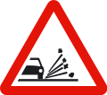
P-28. Loose chippings
Danger due to the proximity of a section where loose chippings may be projected as vehicles pass.
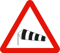
P-29. Crosswind
Danger due to the proximity of a section where strong crosswinds frequently blow.
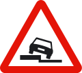
P-30. Uneven shoulder
Danger due to the presence of a drop along the road on the side indicated by the symbol.
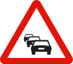
P-31. Traffic congestion
Danger due to the proximity of a section where traffic is stopped or hindered by congestion.
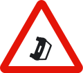
P-32. Obstruction on the carriageway
Danger due to the proximity of a place where vehicles are obstructing the carriageway owing to breakdown, accident or other causes.
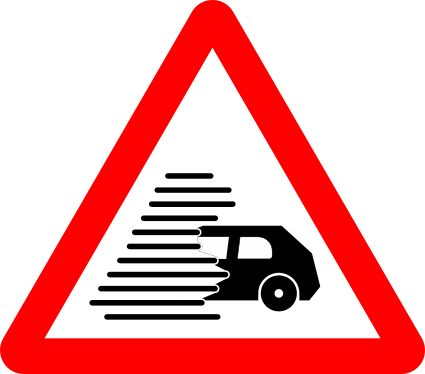
P-33. Reduced visibility
Danger due to the proximity of a section where traffic is hindered by a significant loss of visibility caused by fog, rain, snow, smoke, etc.
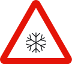
P-34. Slippery surface due to ice or snow
Danger due to the proximity of a section of carriageway whose surface may be especially slippery due to ice or snow.
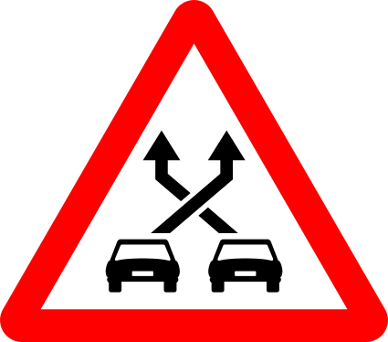
P-35. Weaving section
Danger due to the proximity of a section between a merge and a diverge where several lane-changing movements occur, with vehicles crossing each other’s paths and therefore increasing the risk of collisions.
P-50. Other dangers
Indicates the proximity of a danger different from those warned of by other signs.
Regulatory Signs in Spain indicate priorities, prohibitions, obligations and restrictions on the road.
They are usually circular, except for priority signs, which have special shapes because of their importance over the rest.
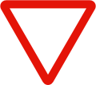
R-1. Give way
Obligation for every driver to give way at the next junction to vehicles travelling on the road being approached or on the lane the driver intends to join.
R-2. Stop
Obligation for every driver to stop their vehicle at the next stop line or, if none exists, immediately before the junction, and give way there to vehicles travelling on the road being approached. If, in exceptional circumstances, there is insufficient visibility from where the stop is made, the driver must stop again in a place where visibility is adequate, without endangering any road user.
R-3. Priority road
Indicates to drivers of vehicles travelling on a road that they have priority at junctions over vehicles travelling on any other road.
R-4. End of priority
Indicates the proximity of the place where the road on which one is travelling ceases to have priority over another road.
R-5. Priority to oncoming traffic
Prohibition to enter a narrow section while it is not possible to pass through without forcing vehicles travelling in the opposite direction to stop.
R-6. Priority over oncoming traffic
Indicates to drivers that, at an upcoming narrow section, they have priority over vehicles travelling in the opposite direction.
No-entry signs are those that restrict access to a road. These signs are circular and white with a red border.
R-100. No vehicles in both directions
Prohibition of traffic for all kinds of vehicles in both directions.
R-101. No entry
Prohibition of access to all kinds of vehicles.
R-102. No entry for motor vehicles
Prohibition of access to motor vehicles.
R-103. No entry for motor vehicles, except two-wheeled motorcycles without sidecar
Prohibition of access to motor vehicles. It does not prohibit access to two-wheeled motorcycles without sidecar.
R-104. No entry for motorcycles
Prohibition of access to motorcycles.
R-105. No entry for mopeds
Prohibition of access to mopeds. It also prohibits access to vehicles for people with reduced mobility.
R-106. No entry for goods vehicles
Prohibition of access to vehicles intended for the carriage of goods, meaning trucks and vans, regardless of their mass.
R-107. No entry for goods vehicles above indicated maximum mass
Prohibition of access to all kinds of goods vehicles if their maximum authorised mass exceeds that indicated. It prohibits access even when they are travelling empty.
R-108. No entry for vehicles carrying dangerous goods
Prohibition of passage for all kinds of vehicles carrying dangerous goods that must travel under their specific regulations.
R-109. No entry for vehicles carrying explosive or flammable goods
Prohibition of passage for all kinds of vehicles carrying explosive or easily flammable goods.
R-110. No entry for vehicles carrying water-polluting goods
Prohibition of passage for all kinds of vehicles carrying more than one thousand litres of products capable of polluting water.
R-111. No entry for agricultural motor vehicles
Prohibition of access to tractors and other self-propelled agricultural machinery.
R-112. No entry for motor vehicles with trailer, other than a semi-trailer or single-axle trailer
The inscription of a figure in tonnes, either on the silhouette of the trailer or on a supplementary plate, means that the prohibition of passage only applies when the maximum authorised mass of the trailer exceeds that figure.
R-113. No entry for animal-drawn vehicles
Prohibition of access to animal-drawn vehicles.
R-114. No entry for cycles
Prohibition of access to cycles.
R-115. No entry for handcarts
Prohibition of access to handcarts.
R-116. No entry for pedestrians
Prohibition of access to pedestrians.
R-117. No entry for ridden animals
Prohibition of access to ridden animals.
R-118. No entry for personal mobility vehicles
Prohibition of access to personal mobility vehicles.
R-119. No entry for cycles and personal mobility vehicles
Prohibition of access to cycles and personal mobility vehicles.
R-120. No entry for vehicles according to their environmental label or other environmental criteria
Prohibition of access to vehicles according to their environmental label or other environmental criteria that may be established. The conditions will be specified on a supplementary panel S-860 or on a signboard including this sign, referring where appropriate to the classification of each vehicle according to its environmental label, as laid down in the regulations.
Access restriction signs prohibit or limit the entry of vehicles approaching them from the front, in the direction of travel, from the point where they are placed.
R-200. No passing without stopping
Indicates the place where stopping is compulsory due to the proximity, according to the inscription it contains, of a customs, police, toll or other checkpoint, and that beyond it mechanical stopping devices may be installed.
R-201. Weight limit
Prohibition of passage for vehicles whose laden weight, or total weight, exceeds the value indicated in tonnes.
R-202. Axle weight limit
Prohibition of passage for vehicles whose total weight on any axle exceeds the value indicated in tonnes.
R-203. Length limit
Prohibition of passage for vehicles or vehicle combinations whose maximum length, including the load, exceeds the value indicated.
R-204. Width limit
Prohibition of passage for vehicles whose maximum width, including the load, exceeds the value indicated.
R-205. Height limit
Prohibition of passage for vehicles whose maximum height, including the load, exceeds the value indicated.
They prohibit or restrict drivers who meet them head-on, from the place where they are located and in the direction of travel.
R-300. Minimum separation distance
Prohibition of driving without maintaining from the vehicle ahead a separation equal to or greater than that indicated on the sign, except when overtaking.
If it appears without a distance indication in metres, remember in general that the statutory safety distance between vehicles must be maintained.
R-301. Maximum speed
Prohibition of driving at a speed greater, in kilometres per hour, than that indicated on the sign. It applies from the place where the sign is situated up to the next “End of speed limit” sign, “End of prohibitions” sign or another “Maximum speed” sign, unless it is placed on the same post as a warning sign or on the same panel as that sign, in which case the prohibition ends when the danger indicated ends. When placed on a non-priority road, it ceases to apply when leaving a junction with a priority road. If the limit indicated by the sign coincides with the maximum speed permitted for that type of road, it serves as a general reminder of the prohibition on exceeding it.
R-302. No right turn
Prohibition of turning right.
R-303. No left turn
Prohibition of turning left. This also includes the prohibition on making a U-turn.
R-304. No U-turn
Prohibition on changing the direction of travel (U-turn).
R-305. No overtaking
In addition to the general principles on overtaking, it indicates the prohibition for all vehicles to overtake motor vehicles travelling on the carriageway, except when those vehicles are two-wheeled motorcycles and provided that the area reserved for oncoming traffic is not invaded, from the place where the sign is situated up to the next “End of no overtaking” sign or “End of prohibitions” sign. When placed in locations where overtaking is prohibited by default, it serves as a general reminder of the prohibition on carrying out this manoeuvre.
R-306. No overtaking for lorries
Prohibition for lorries whose maximum authorised mass exceeds 3,500 kilograms to overtake motor vehicles travelling on the carriageway, except when those vehicles are two-wheeled motorcycles and provided that the area reserved for oncoming traffic is not invaded, from the place where the sign is situated up to the next “End of no overtaking for lorries” sign or “End of prohibitions” sign.
R-307. No stopping or parking
Prohibition on stopping and parking on the side of the carriageway where the sign is situated. Unless otherwise indicated, the prohibition begins in line with the sign and ends at the next junction.
R-307a. No stopping or parking on either side of the sign
Prohibition on stopping and parking on the side of the carriageway where the sign is situated, along the section between the junctions or the nearest R-307b and R-307c signs on both sides of the sign.
R-307b. No stopping or parking in the direction indicated by the arrow
Prohibition on stopping and parking on the side of the carriageway where the sign is situated, along the section between the sign and the nearest junction or R-307c sign in the direction indicated by the arrow.
R-307c. No stopping or parking in the direction indicated by the arrow
Prohibition on stopping and parking on the side of the carriageway where the sign is situated, along the section between the sign and the nearest junction or R-307b sign in the direction indicated by the arrow.
R-308. No parking
Prohibition on parking on the side of the carriageway where the sign is situated. Unless otherwise indicated, the prohibition begins in line with the sign and ends at the next junction. Stopping is not prohibited.
R-308c. No parking during the first half of the month
Prohibition on parking on the side of the carriageway where the sign is situated, from 09:00 on the 1st day of the month until 09:00 on the 16th day of the month.
Unless otherwise indicated, the prohibition begins in line with the sign and ends at the next junction. Stopping is not prohibited.
R-308d. No parking during the second half of the month
Prohibition on parking on the side of the carriageway where the sign is situated, from 09:00 on the 16th day of the month until 09:00 on the 1st day of the following month. Unless otherwise indicated, the prohibition begins in line with the sign and ends at the next junction. Stopping is not prohibited.
R-308e. No parking in front of driveway
Prohibits parking in front of a driveway (dropped kerb).
R-308f. No parking on either side of the sign
Prohibition on parking on the side of the carriageway where the sign is situated, along the section between the junctions or the nearest R-308g and R-308h signs on both sides of the sign. Stopping is not prohibited.
R-308g. No parking in the direction indicated by the arrow
Prohibition on parking on the side of the carriageway where the sign is situated, along the section between the sign and the nearest junction or R-308h sign in the direction indicated by the arrow. Stopping is not prohibited.
R-308h. No parking in the direction indicated by the arrow
Prohibition on parking on the side of the carriageway where the sign is situated, along the section between the sign and the nearest junction or R-308g sign in the direction indicated by the arrow. Stopping is not prohibited.
R-309. Controlled parking zone
Zone with time-limited parking and obligation for the driver to indicate, in the prescribed manner, the time when parking begins.
R-310. Use of audible warnings prohibited
Reminds of the general prohibition on using audible warning devices, except to avoid an accident.
These signs indicate a compulsory traffic rule.
R-400. Mandatory direction
The arrow indicates the direction in which vehicles are required to travel.
R-401. Mandatory side of traffic island or obstacle
The arrow indicates the side of the refuge, traffic island or obstacle on which vehicles must pass.
R-402. Roundabout – mandatory direction
The arrows indicate the direction of the circular movement that vehicles must follow.
R-403. Only permitted directions
The arrows indicate the only directions and senses in which vehicles may proceed.
R-404. Carriageway for motor vehicles, except two-wheeled motorcycles without sidecar
Obligation for drivers of motor vehicles, except two-wheeled motorcycles without sidecar, to use the carriageway at whose entrance the sign is placed.
R-405. Carriageway for two-wheeled motorcycles without sidecar
Obligation for drivers of two-wheeled motorcycles without sidecar to use the carriageway at whose entrance the sign is placed.
R-406. Carriageway for lorries
Obligation for drivers of all kinds of lorries, regardless of their weight, to use the carriageway at whose entrance the sign is placed. The inscription of a figure in tonnes, either on the silhouette of the vehicle or on a supplementary plate, means that the obligation only applies when the maximum authorised mass of the vehicle or vehicle combination exceeds that figure.
R-407a. Lane reserved and mandatory for cycles
Obligation for cyclists to use the lane at whose entrance the sign is placed and prohibition on other road users using it.
R-407b. Lane reserved and mandatory for mopeds
Obligation for moped riders to use the lane at whose entrance the sign is placed and prohibition on other road users using it.
R-408. Track for animal-drawn vehicles
Obligation for drivers of animal-drawn vehicles to use the track at whose entrance the sign is placed.
R-409. Track reserved for ridden animals
Obligation for riders to use with their mounts the track at whose entrance the sign is placed, and prohibition on other road users using it.
R-410. Track reserved for pedestrians
Obligation for pedestrians to use the track at whose entrance the sign is placed, and prohibition on other road users using it.
R-411. Minimum speed
Obligation for drivers of vehicles to travel at least at the speed indicated by the figure, in kilometres per hour, shown on the sign, from the place where it is situated up to another “Minimum speed” sign with a different value, or an “End of minimum speed” sign, or a “Maximum speed” sign with an equal or lower value.
R-412. Snow chains
Obligation not to continue travelling without snow chains or other authorised devices fitted to at least one wheel on each side of the same driving axle.
R-412b. Winter tyres
Obligation not to continue travelling without special winter tyres.
R-413. Dipped-beam headlights (low beam)
Obligation for drivers to travel with at least dipped-beam (low beam) headlights on, regardless of visibility or road lighting conditions, from the place where the sign is situated until another sign indicates the end of this obligation.
R-414. Carriageway for vehicles carrying dangerous goods
Obligation for drivers of all kinds of vehicles carrying dangerous goods to use the carriageway at whose entrance the sign is placed.
R-415. Carriageway for vehicles carrying water-polluting goods
Obligation for drivers of all kinds of vehicles carrying more than 1,000 litres of products capable of polluting water to use the carriageway at whose entrance the sign is placed.
R-416. Carriageway for vehicles carrying explosive or flammable goods
Obligation for drivers of all kinds of vehicles carrying explosive or flammable goods to use the carriageway at whose entrance the sign is placed.
R-418. Lane reserved exclusively for vehicles equipped with an operational electronic toll device
Electronic toll mandatory. Obligation to pay the toll using a dynamic toll or electronic toll system; vehicles travelling in the lane or lanes marked with this sign must be equipped with the technical device that allows its use in operational conditions in accordance with the applicable legal provisions.
R-419. Mandatory route for tractors
Obligation for tractor drivers to use the route at whose entrance the sign is placed.
R-420. Lane reserved and mandatory for personal mobility vehicles
Obligation for drivers of personal mobility vehicles to use the lane at whose entrance the sign is placed, and prohibition on other road users using it.
R-421. Lane reserved and mandatory for cycles and personal mobility vehicles
Obligation for cyclists and drivers of personal mobility vehicles to use the lane at whose entrance the sign is placed, and prohibition on other road users using it.
R-422. Dismount and continue on foot
Obligation for cyclists to continue on foot. If this obligation is limited to certain periods, this will be indicated by a supplementary panel.
R-500. End of prohibitions
Indicates the place from which all local prohibitions, indicated by previous prohibition signs for moving vehicles, cease to apply.
R-501. End of speed limit
Indicates the place from which a previous “Maximum speed” sign ceases to apply.
R-502. End of no overtaking
Indicates the place from which a previous “No overtaking” sign ceases to apply.
R-503. End of no overtaking for lorries
Indicates the place from which a previous “No overtaking for lorries” sign ceases to apply.
R-504. End of controlled parking zone
Indicates the place from which a previous “Controlled parking zone” sign ceases to apply.
R-505. End of lane reserved and mandatory for cycles
Indicates the place from which a previous sign indicating a lane reserved and mandatory for cycles ceases to apply.
R-506. End of minimum speed
Indicates the place from which a previous minimum speed sign no longer applies.
R-507. End of mandatory carriageway for motor vehicles, except two-wheeled motorcycles
Indicates the place from which a previous sign indicating a mandatory carriageway for motor vehicles, except two-wheeled motorcycles and three-wheeled vehicles assimilated to motorcycles, no longer applies.
R-508. End of mandatory carriageway for two-wheeled motorcycles
Indicates the place from which a previous sign indicating a mandatory carriageway for two-wheeled motorcycles and three-wheeled vehicles assimilated to motorcycles no longer applies.
R-509. End of mandatory carriageway for lorries, tractor units and vans
Indicates the place from which a previous sign indicating a mandatory carriageway for lorries, tractor units and panel vans no longer applies.
R-510. End of lane reserved and mandatory for mopeds
Indicates the place from which a previous sign indicating a lane reserved and mandatory for mopeds no longer applies.
R-511. End of mandatory track for animal-drawn vehicles
Indicates the place from which a previous sign indicating a mandatory track for animal-drawn vehicles no longer applies.
R-512. End of reserved and mandatory track for ridden animals
Indicates the place from which a previous sign indicating a reserved and mandatory track for ridden animals no longer applies.
R-513. End of reserved and mandatory track for pedestrians
Indicates the place from which a previous sign indicating a reserved and mandatory track for pedestrians no longer applies.
R-514. End of mandatory route for tractors
Indicates the place from which a previous sign indicating a mandatory route for tractors no longer applies.
R-515. End of lane reserved and mandatory for personal mobility vehicles
Indicates the place from which a previous sign indicating a lane reserved and mandatory for personal mobility vehicles no longer applies.
R-516. End of lane reserved and mandatory for cycles and personal mobility vehicles
Indicates the place from which a previous sign indicating a lane reserved and mandatory for cycles and personal mobility vehicles no longer applies.
Information traffic signs give the driver useful or important information.
These signs are square or rectangular, blue, with white symbols and border.
S-1. Motorway
Indicates the start of a motorway and therefore the point from which the special rules of this type of road apply. The symbol may also be used to announce the proximity of a motorway or to indicate the branch of a junction leading to a motorway.
S-1a. Dual carriageway
Indicates the start of a dual carriageway and therefore the point from which the special rules of this type of road apply. The symbol may also be used to announce the proximity of a dual carriageway or to indicate the branch of a junction leading to a dual carriageway.
S-1b. Multi-lane road
Indicates the start of a multi-lane road and therefore the point from which the special rules of this type of road apply. This sign may also indicate the branch of a junction leading to a multi-lane road.
S-1c. 2+1 road
Indicates the start of a 2+1 road, that is, a road with three traffic lanes and two-way traffic. The centre lane is used to facilitate overtaking manoeuvres and is alternately reserved for one direction of traffic and the other. This sign may also indicate the branch of a junction leading to a 2+1 road.
S-2. End of motorway
Indicates the end of a motorway.
S-2a. End of dual carriageway
Indicates the end of a dual carriageway.
S-2b. End of multi-lane road
Indicates the end of a multi-lane road.
S-2c. End of 2+1 road
Indicates the end of a 2+1 road.
S-3. Road reserved for motor vehicles
Indicates the start of a road reserved for the circulation of motor vehicles.
S-4. End of road reserved for motor vehicles
Indicates the end of a road reserved for motor vehicles.
S-5. Tunnel
Indicates the start, and possibly the name, of a tunnel, an underpass or a section of road treated as a tunnel. It may have the tunnel length shown in metres in its lower part.
S-7. Advisory maximum speed
Recommends an approximate speed in kilometres per hour, which should not be exceeded, even when weather and road conditions and traffic flow are favourable. When placed beneath a warning sign, the recommendation applies to the section where the danger exists.
S-8. End of advisory maximum speed
Indicates the end of a section in which it is recommended to travel at the speed in kilometres per hour indicated on the sign.
S-9. Advisory speed range
Recommends keeping speed between the values indicated, provided that weather and road conditions and traffic flow are favourable. When placed beneath a warning sign, the recommendation applies to the section where the danger exists.
S-10. End of advisory speed range
Indicates the place from which a previous “advisory speed range” sign no longer applies.
S-11. One-way carriageway
Indicates that on the carriageway continuing in the direction of the arrow, vehicles must travel in the direction shown and that traffic in the opposite direction is prohibited.
S-11a. One-way carriageway
Indicates that on the carriageway continuing in the direction of the arrows (two lanes), vehicles must travel in the direction shown and that traffic in the opposite direction is prohibited.
S-11b. One-way carriageway
Indicates that on the carriageway continuing in the direction of the arrows (three lanes), vehicles must travel in the direction shown and that traffic in the opposite direction is prohibited.
S-12a. One-way section
Indicates that on the section of carriageway continuing in the direction of the arrow, vehicles must travel in the direction shown and that traffic in the opposite direction is prohibited.
S-12b. One-way section
Indicates that on the section of carriageway continuing in the direction of the arrow, vehicles must travel in the direction shown and that traffic in the opposite direction is prohibited.
S-13. Location of a pedestrian crossing
Indicates the location of a pedestrian crossing.
S-14a. Footbridge
Indicates the location of a footbridge.
S-14b. Pedestrian underpass
Indicates the location of a pedestrian underpass.
S-14c. Footbridge with ramp
Indicates the location of a footbridge equipped with a ramp.
S-14d. Pedestrian underpass with ramp
Indicates the location of a pedestrian underpass equipped with a ramp.
S-14e. Footbridge with rail or ramp for cycles
Indicates the location of a footbridge equipped with a rail or ramp for cycles.
S-14f. Pedestrian underpass with rail or ramp for cycles
Indicates the location of a pedestrian underpass equipped with a rail or ramp for cycles.
S-15. Advance sign for a no-through road
Indicates that vehicles entering the road shown in the sign with a red frame can only exit from the place where they entered.
S-15e. No-through road except for pedestrians or cycles
Indicates that the road shown in the sign with a red frame has no exit except for pedestrians or cycles. The pictogram(s) of the users to whom the exception applies will be shown.
S-16. Emergency escape lane
Indicates the location of an escape lane off the carriageway designed so that a vehicle can be brought to a stop in the event of brake failure.
S-17. Parking
Indicates a place where parking of vehicles is permitted. An inscription or symbol representing certain types of vehicles indicates that parking is reserved for those types. An inscription with time information limits the duration of parking indicated.
S-17a. Short-stay parking for a specific need
Indicates a place where parking is permitted only for a specific purpose (access to a pharmacy, hospital, etc.), whose pictogram will be shown on the sign, and for a specific time. The duration will be indicated on a supplementary panel.
S-18. Taxi rank
Indicates a place reserved for stopping and parking of taxis, whether free or in service. A number on the sign indicates the total number of spaces reserved for this purpose.
S-19. Bus stop
Indicates a place reserved for bus stops.
S-20. Tram stop
Indicates a place reserved for tram stops.
S-21. Mountain pass
Indicates the current traffic conditions of the mountain pass or section named at the top of the sign.
S-22. Same-level U-turn facility
Indicates the proximity of an exit through which a U-turn can be made at the same level.
S-23. Hospital
Also indicates to drivers that they should take special care owing to the proximity of medical facilities and, in particular, avoid unnecessary noise.
S-24. End of dipped-beam requirement
Indicates the end of a section where dipped-beam (low beam) headlights are compulsory and reminds drivers that they may switch them off, provided that this is not prohibited by visibility conditions, time of day or road lighting.
S-25. Grade-separated U-turn facility
Indicates the proximity of an exit through which a U-turn can be made at a different level.
S-26. Distance-to-exit marker
On a motorway, dual carriageway or road reserved for motor vehicles, indicates that the next exit is located approximately 300, 200 and 100 metres away respectively.
S-27. Roadside assistance
Indicates the location of the nearest emergency post or station from which assistance can be requested in the event of an accident or breakdown. The sign may indicate the distance to that post.
S-28. Residential zone
Indicates special traffic-calmed areas intended primarily for pedestrians where the following special rules apply: the maximum speed for vehicles is 20 km/h and drivers must give way to pedestrians. Vehicles may only be parked in spaces indicated by signs or road markings.
Pedestrians may use the whole traffic area. Games and sports are permitted. Pedestrians must not unnecessarily hinder drivers.
S-29. End of residential zone
Indicates that the general traffic rules apply again.
S-30a. Pedestrian zone
Indicates a zone reserved for pedestrians.
S-31a. End of pedestrian zone
Indicates the end of a zone reserved for pedestrians.
S-32. Electronic toll (ETC)
Indicates that vehicles travelling in the lane or lanes marked with this sign may pay the toll using an electronic or dynamic toll system, provided they are equipped with the necessary device.
S-33. Shared-use path for pedestrians, cycles and personal mobility vehicles
Indicates the existence of a path for pedestrians, cycles and personal mobility vehicles, separated from motor traffic and running through open areas, parks, gardens or woodland.
S-34. Lay-by in tunnels
Indicates the location of a place in a tunnel where a vehicle can pull in to leave the lane free.
S-34a. Lay-by in tunnels with emergency telephone
Indicates the location of a place in a tunnel where a vehicle can pull in to leave the lane free and which has an emergency telephone.
S-35. Road reserved for cycles
Indicates the existence of a road intended for cycle traffic and prohibits its use by other road users.
S-36. End of road reserved for cycles
Indicates the end of a road intended for cycle traffic.
S-37. Road reserved for personal mobility vehicles
Indicates the existence of a road intended for personal mobility vehicles and prohibits its use by other road users.
S-38. Road reserved for cycles and personal mobility vehicles
Indicates the existence of a road intended for cycle and personal mobility vehicle traffic and prohibits its use by other road users.
S-39. End of road reserved for personal mobility vehicles
Indicates the end of a road intended for personal mobility vehicle traffic.
S-40. End of road reserved for cycles and personal mobility vehicles
Indicates the end of a road intended for cycle and personal mobility vehicle traffic.
S-41. Road reserved for cycles and pedestrians with separate space for each
Indicates the existence of a road intended for cycles and pedestrians with separate space for each. The design of the sign may be adapted to the actual layout of the spaces on each road.
S-42. End of road reserved for cycles and pedestrians with separate space for each
Indicates the end of a road intended for cycles and pedestrians with separate space for each. The design of the sign may be adapted to the actual layout of the spaces on each road.
S-43. Road reserved for cycles, personal mobility vehicles and pedestrians, with separate space for the first two and for the third
Indicates the existence of a road intended for cycles, personal mobility vehicles and pedestrians, with separate space for the first two and for the third. The design of the sign may be adapted to the actual layout of the spaces on each road.
S-44. End of road reserved for cycles, personal mobility vehicles and pedestrians, with separate space for the first two and for the third
Indicates the end of a road intended for cycles, personal mobility vehicles and pedestrians, with separate space for the first two and for the third. The design of the sign may be adapted to the actual layout of the spaces on each road.
S-45. Location of a cycle crossing
Indicates the location of a cycle crossing.
S-46. Location of a pedestrian and cycle crossing
Indicates the location of a pedestrian crossing that is adjacent to or shared with a cycle crossing.
S-47. Shared-space zone (coexistence zone)
Indicates a traffic area intended primarily for pedestrians where the following special rules apply: the maximum speed for vehicles is 20 km/h; the space is shared between vehicles, cyclists and pedestrians; pedestrians have priority, may use the whole traffic area and therefore pedestrian crossings are not marked; cycles and, where appropriate, personal mobility vehicles may travel in both directions unless the competent authority decides otherwise; vehicles may only be parked in spaces marked by signs or road markings; games and sports are not permitted.
S-48. End of shared-space zone
Indicates that the general traffic rules apply again.
S-49. Advance stop line for motorcycles or cycles
Indicates the existence of a waiting area ahead of the normal stop line at a signal-controlled junction, reserved for the vehicles shown on the sign (motorcycles, three-wheeled vehicles assimilated to motorcycles and mopeds, represented by a motorcycle symbol, or cycles).
These signs indicate the purpose of lanes, the transition from one to several lanes, and similar situations.
Lanes mandatory for slow traffic and reserved for fast traffic
Indicates that the lane above which the minimum speed sign is placed may only be used by vehicles travelling at a speed equal to or higher than that indicated, although they must use the right-hand lane whenever circumstances allow.
S-51a. Lane reserved for high-occupancy vehicles or specific vehicle types
Indicates a lane reserved exclusively for certain types of vehicles (buses, motorcycles, three-wheeled vehicles assimilated to motorcycles, taxis, cycles, etc.). The symbol of the authorised vehicle type or types will be shown on the sign. On sections where the longitudinal lane marking is a broken line, use of the lane by other vehicles is permitted only to perform a manoeuvre other than stopping, parking, U-turning or overtaking, and priority must always be given to vehicles authorised to use this lane.
S-51b. Lane reserved for high-occupancy vehicles (HOV)
Indicates one or more lanes reserved exclusively for high-occupancy vehicles. The sign will show the minimum number of occupants from which a vehicle is considered high-occupancy, as determined by the competent road authority. If the lane(s) are reserved not only for HOVs but also for other specific types of vehicles, the corresponding symbols may be combined as in sign S-51a.
S-52. End of lane
Gives advance warning that the lane shown will cease to be available, indicating the necessary lane change.
S-53. Transition from one to two lanes in the same direction
Indicates, on a section with one lane in a given direction, that the next section will have two lanes in that same direction.
S-53a. Transition from one to two lanes with indication of maximum speed in each lane
Indicates, on a section with one traffic lane, that the next section will have two lanes in the same direction of travel. It also indicates the maximum permitted speed in each lane.
S-53b. Transition from two to three lanes in the same direction
Indicates, on a section with two lanes in the same direction, that the next section will have three lanes in that direction.
S-53c. Transition from two to three lanes with indication of maximum speed in each lane
Indicates, on a section with two lanes in the same direction, that the next section will have three lanes in that direction. It also indicates the maximum permitted speed in each lane.
S-60a. Left-hand fork on a two-lane carriageway
Indicates, on a carriageway with two lanes in the same direction, that the left-hand lane will fork to that side on the next section.
S-60b. Right-hand fork on a two-lane carriageway
Indicates, on a carriageway with two lanes in the same direction, that the right-hand lane will fork to that side on the next section.
S-61a. Left-hand fork on a three-lane carriageway
Indicates, on a carriageway with three lanes in the same direction, that the left-hand lane will fork to that side on the next section.
S-61b. Right-hand fork on a three-lane carriageway
Indicates, on a carriageway with three lanes in the same direction, that the right-hand lane will fork to that side on the next section.
S-61c. Right-hand fork on a carriageway with two lanes in the direction of travel and one lane in the opposite direction
Indicates, on a two-way carriageway with two lanes in the direction of travel, that there will be a fork with a change of direction on the right-hand lane.
S-62a. Left-hand fork on a four-lane carriageway
Indicates, on a carriageway with four lanes in the same direction, that the left-hand lane will fork to that side on the next section.
S-62b. Right-hand fork on a four-lane carriageway
Indicates, on a carriageway with four lanes in the same direction, that the right-hand lane will fork to that side on the next section.
S-63a. Fork on a four-lane carriageway
Indicates, on a carriageway with four lanes in the same direction, that in the next section the two left-hand lanes will fork to the left and the two right-hand lanes to the right.
S-63b. Fork on a three-lane carriageway
Indicates, on a carriageway with three lanes in the same direction, that there will be a fork on the centre lane with a change of direction for the four resulting lanes, two to the left and two to the right.
S-63c. Fork of two lanes to the left on a four-lane carriageway
Indicates, on a carriageway with four lanes in the same direction, that there will be a fork with a change of direction on the two left-hand lanes.
S-63d. Fork of two lanes to the right on a four-lane carriageway
Indicates, on a carriageway with four lanes in the same direction, that there will be a fork with a change of direction on the two right-hand lanes.
S-64. Cycle lane or cycle track adjacent to the carriageway
Indicates that the lane above which the cycle track sign is placed may only be used by cycles. The arrows indicate the number of carriageway lanes and their direction of travel.
S-65. Cycle track adjacent to the carriageway
Indicates that the lane above which the sign is placed is reserved for cycle traffic and may not be used by other road users. The arrows indicate the number of carriageway lanes.
S-66. Contraflow cycle lane
Indicates the existence of a mandatory cycle lane whose direction of travel is opposite to that of the adjacent traffic lane.
S-68. Section with one lane in the direction of travel and two lanes in the opposite direction
Indicates, on a two-way carriageway, that there is only one lane in the direction of travel while the opposite direction has two lanes. The length of this configuration is indicated on a supplementary panel S-810.
S-70a. Merge from the left on a single-lane carriageway
Indicates, on a carriageway with one traffic lane, that a lane will merge from the left.
S-70b. Merge from the right on a single-lane carriageway
Indicates, on a carriageway with one traffic lane, that a lane will merge from the right.
S-71a. Merge from the left on a two-lane carriageway
Indicates, on a carriageway with two lanes in the same direction, that a lane will merge from the left.
S-71b. Merge from the right on a two-lane carriageway
Indicates, on a carriageway with two lanes in the same direction, that a lane will merge from the right.
S-72a. Merge from the left on a three-lane carriageway
Indicates, on a carriageway with three lanes in the same direction, that a lane will merge from the left.
S-72b. Merge from the right on a three-lane carriageway
Indicates, on a carriageway with three lanes in the same direction, that a lane will merge from the right.
S-73a. Merge of two lanes from the left on a two-lane carriageway
Indicates, on a carriageway with two lanes in the same direction, that two lanes will merge from the left.
S-73b. Merge of two lanes from the right on a two-lane carriageway
Indicates, on a carriageway with two lanes in the same direction, that two lanes will merge from the right.
The following signs indicate the location of roadside services.
S-100. First-aid post
Indicates the location of an officially recognised centre where emergency medical treatment can be provided.
S-101. Ambulance base
Indicates the location of an ambulance permanently available for emergency care and transport of those injured in road accidents.
S-102. Vehicle inspection station
Indicates the location of a vehicle roadworthiness testing station (ITV).
S-103. Repair workshop
Indicates the location of a vehicle repair workshop.
S-104. Emergency telephone
Indicates the location of a telephone available at all times for notifying the authorities of an accident or emergency on the road.
S-105. Filling station
Indicates the location of a fuel pump or service station.
S-105b. Filling station with LPG
Indicates the location of a fuel filling station with liquefied petroleum gas (LPG) or autogas available.
S-105c. LPG filling station
Indicates the location of a filling station for liquefied petroleum gas (LPG) or autogas.
S-105d. Filling station with electric charging point
Indicates the location of a fuel filling station with an electric charging point available.
S-105e. Electric charging station
Indicates the location of an electric charging station.
S-105f. Filling station with LPG and electric charging station
Indicates the location of a fuel filling station with liquefied petroleum gas (LPG) or autogas and an electric charging station available.
S-106. Repair workshop and filling station
Indicates the location of a facility that has both a repair workshop and a fuel filling station.
S-107. Campsite
Indicates the location of a place (camping site) where camping is allowed.
S-108. Water
Indicates the location of a water fountain.
S-109. Scenic viewpoint
Indicates a scenic spot or the place from which it can be viewed.
S-110. Hotel or motel
Indicates the location of a hotel or motel.
S-111. Restaurant
Indicates the location of a restaurant.
S-112. Cafeteria
Indicates the location of a bar or cafeteria.
S-113. Site for caravans
Indicates the location of a site where camping with a caravan (trailer home) is allowed.
S-114. Picnic area
Indicates a place that can be used for eating or drinking (picnicking).
S-115. Starting point for walking routes
Indicates a suitable place to start walking excursions.
S-116. Campsite and site for caravans
Indicates the location of a place where camping is allowed with tents or caravans (trailer homes).
S-117. Youth hostel
Indicates the location of a hostel reserved for youth organisations.
S-118. Tourist information
Indicates the location of a tourist information office.
S-119. Fishing reserve
Indicates a stretch of river or lake where fishing is subject to a special permit.
S-120. National park
Indicates the location of a national park whose name is not shown on the sign.
S-121. Monument
Indicates the location of a historic or artistic site declared a monument.
S-122. Other services
Generic sign for any other service, which will be shown inside the white box.
S-123. Rest area
Indicates the location of a rest area.
S-124. Parking for rail users
Indicates the location of a parking area connected to a railway station, intended mainly for vehicles of users who make one part of their journey by private vehicle and the other by train.
S-125. Parking for underground railway users
Indicates the location of a parking area connected to an underground or metro station, intended mainly for vehicles of users who make one part of their journey by private vehicle and the other by underground railway.
S-126. Parking for bus users
Indicates the location of a parking area linked to a bus station or terminal, intended mainly for private vehicles of users who make one part of their journey by private vehicle and the other by bus.
S-128. Waste disposal point for caravans and motorhomes
Indicates the location of a point for emptying waste water from caravans and motorhomes.
S-129. Emergency parking area in case of snow
Indicates the location of an emergency parking area for snow events and, exceptionally, for other incidents.
S-200. Advance direction sign for roundabout
Indicates the directions of the different exits of the next roundabout. If any inscription appears on a green or blue background, it indicates that the exit leads to an expressway, motorway or dual carriageway.
S-220. Advance direction sign towards a conventional road
Indicates, on a conventional road, the directions of the various branches at the next junction when one of them leads to a conventional road.
S-222. Advance direction sign towards a motorway or dual carriageway
Indicates, on a conventional road, the directions of the various branches at the next junction when one of them leads to a motorway or dual carriageway.
S-222a. Advance direction sign towards a motorway or dual carriageway and for the through direction
Indicates, on a conventional road, the directions of the various branches at the next junction when one of them leads to a motorway or dual carriageway. It also indicates the through direction of the conventional road.
S-225. Advance direction sign on a motorway or dual carriageway towards any road
Indicates, on a motorway or dual carriageway, the directions of the different branches at the next junction. It also indicates the distance, the junction number and, where appropriate, the letter of the junction and branch.
S-230. Overhead advance direction sign on a conventional road towards a conventional road
Indicates the directions of the branch of the next exit and the distance to it.
S-230a. Overhead advance direction sign on a conventional road towards a conventional road and for the through direction
Indicates the directions of the branch of the next exit and the distance to it. It also indicates the through direction of the conventional road.
S-232. Overhead advance direction sign on a conventional road towards a motorway or dual carriageway
Indicates the directions of the branch of the next exit and the distance to it when the exit leads to a motorway or dual carriageway.
S-232a. Overhead advance direction sign on a conventional road towards a motorway or dual carriageway and for the through direction
Indicates the directions of the branch of the next exit and the distance to it when the exit leads to a motorway or dual carriageway. It also indicates the through direction of the conventional road.
S-235. Overhead advance direction sign on a motorway or dual carriageway towards any road
Indicates the directions of the branch of the next exit, the distance to it and the junction number.
S-235a. Overhead advance direction sign on a motorway or dual carriageway towards any road and for the through direction
Indicates the directions of the branch of the next exit, the distance to it and the junction number. It also indicates the through direction of the motorway or dual carriageway.
S-242. Advance direction sign on a motorway or dual carriageway for two closely spaced exits towards any road
Indicates the directions of the branches of two consecutive exits on a motorway or dual carriageway, the distance, the junction number and the letter of each exit.
S-242a. Advance direction sign on a motorway or dual carriageway for two closely spaced exits towards any road and for the through direction
Indicates the directions of the branches of two consecutive exits on a motorway or dual carriageway, the distance, the junction number and the letter of each exit. It also indicates the through direction of the motorway or dual carriageway.
S-250. Advance route sign
Indicates the route that must be followed to take the direction indicated by the arrow.
S-260. Advance lane direction sign
Indicates the only directions permitted, at the next junction, to users travelling in the lanes shown.
S-261. Advance direction sign on a conventional road for a service area or zone
Indicates, on a conventional road, the proximity of an exit leading to a service area or zone.
S-263. Advance direction sign on a motorway or dual carriageway for a service area with shared exit
Indicates, on a motorway or dual carriageway, the proximity of an exit leading to a service area or zone, where the exit is shared with access to one or more towns.
S-263a. Advance direction sign on a motorway or dual carriageway for a service area with exclusive exit
Indicates, on a motorway or dual carriageway, the proximity of an exit leading exclusively to a service area or zone.
S-264. Advance direction sign on a conventional road for a service road
Indicates, on a conventional road, the proximity of an exit leading to a service road from which the indicated services can be accessed.
S-266. Advance direction sign on a motorway or dual carriageway for a service road, with shared exit
Indicates, on a motorway or dual carriageway, the proximity of an exit leading to a service road from which the indicated services can be accessed, where this exit is shared with access to one or more towns.
S-266a. Advance direction sign on a motorway or dual carriageway for a service road, with exclusive exit
Indicates, on a motorway or dual carriageway, the proximity of an exit leading to a service road from which the indicated services can be accessed.
S-270. Advance direction sign for two closely spaced exits
Indicates the proximity of two consecutive exits between which there is not enough distance to install separate direction signs for each exit. The letters or, where appropriate, the numbers correspond to those on the immediately preceding advance direction signs.
S-271. Advance direction sign for a service area
Indicates, on a motorway or dual carriageway, the exit leading to a service area.
S-300. Towns on a route along a conventional road
Indicates the names of towns situated on a route made up of a conventional road and the direction in which they are reached. The panel shown within the sign defines the category and number of the road. The figures inside the sign indicate the distance in kilometres.
S-301. Towns on a route along a motorway or dual carriageway
Indicates the names of towns situated on a route made up of a motorway or dual carriageway and the direction in which they are reached. The panel shown within the sign defines the category and number of the road. The figures inside the sign indicate the distance in kilometres.
S-310. Towns on several routes
Indicates the roads and towns that can be reached in the direction indicated by the arrow.
S-320. Places of interest on a conventional road
Indicates places of general interest that are not towns and are situated on a route made up of a conventional road. The figures inside the sign indicate the distance in kilometres.
S-321. Places of interest on a motorway or dual carriageway
Indicates places of interest that are not towns and are situated on a route made up of a motorway or dual carriageway. The figures inside the sign indicate the distance in kilometres.
S-322. Destination sign towards a cycle track or cycle path
Indicates that in the direction pointed to by the arrow there is a cycle track or cycle path. The figures inside the sign indicate the distance in kilometres.
S-341. Immediate exit destination sign towards a conventional road
Indicates, on a motorway or dual carriageway, the location of the exit towards a conventional road. The figure indicates the junction number.
S-342. Immediate exit destination sign towards a motorway or dual carriageway
Indicates, on a motorway or dual carriageway, the location of the exit towards a motorway or dual carriageway. The figure indicates the junction number.
S-344. Immediate exit destination sign towards a service zone, area or road
Indicates the location of the exit from any road towards a service zone, area or service road.
S-347. Immediate exit destination sign towards a service zone, area or road, with shared exit towards a motorway or dual carriageway
Indicates the location of the exit from any road towards a service zone, area or service road, where this exit is shared with an exit towards a motorway or dual carriageway.
S-348a. Diversion destination sign
Indicates that by following the provisional diversion route in the direction indicated by the arrow a particular destination is reached.
S-348b. Variable destination sign
Indicates that in the direction pointed to by the arrow the destination shown on the sign can be reached.
S-350. Overhead sign on a conventional road. Immediate exit towards a conventional road
Indicates, on a conventional road, at the point where the exit branch begins, the directions that can be reached by the immediate exit to another conventional road and, where appropriate, the number of that road.
S-351. Overhead sign on a motorway or dual carriageway
Indicates, on a motorway or dual carriageway, at the point where the exit branch begins towards any road, the directions that can be reached by the immediate exit to a conventional road and, where appropriate, its number. It also indicates the junction number and, where appropriate, the letter of the junction and branch.
S-354. Overhead sign on a conventional road. Immediate exit towards a motorway or dual carriageway
Indicates, at the point where the exit branch begins, the directions that can be reached by the immediate exit to a motorway or dual carriageway and, where appropriate, its number.
S-355. Overhead sign on a motorway, dual carriageway or expressway. Immediate exit towards a motorway or dual carriageway
Indicates, at the point where the exit branch begins, the directions that can be reached by the immediate exit to a motorway or dual carriageway and, where appropriate, its number. It also indicates the junction number and, where appropriate, the letter of the junction and branch.
S-360. Overhead sign on a conventional road. Immediate exit towards a conventional road and for the through direction
Indicates, on a conventional road, the directions that can be reached by the immediate exit towards another conventional road. It also indicates the through direction of the conventional road and its number.
S-362. Overhead sign on a conventional road. Immediate exit towards a motorway or dual carriageway and for the through direction
Indicates, on a conventional road, the directions that can be reached by the immediate exit towards a motorway or dual carriageway. It also indicates the through direction of the conventional road.
S-366. Overhead signs on a motorway or dual carriageway. Immediate exit to a conventional road and through direction
Indicates, on a motorway or dual carriageway, the directions that can be reached via the immediate exit to a conventional road, as well as the junction number and, where appropriate, the branch letter. It also indicates the through direction of the motorway or dual carriageway.
S-368. Overhead signs on a motorway or dual carriageway. Immediate exit to a motorway or dual carriageway and through direction
Indicates, on a motorway or dual carriageway, the directions that can be reached via the immediate exit to another motorway or dual carriageway, as well as the junction number and, where appropriate, the branch letter. It also indicates the through direction of the motorway or dual carriageway.
S-371. Overhead signs on a conventional road
Indicates, on a conventional road, two closely spaced immediate exits towards conventional roads and the through direction.
S-373. Overhead signs on a motorway or dual carriageway. Two closely spaced immediate exits to conventional roads and through direction
Indicates the directions of the branches of two consecutive exits on a motorway or dual carriageway, the distance to the second one, the junction number and the letter of each exit. It also indicates the through direction of the motorway or dual carriageway.
S-375. Overhead signs on a motorway or dual carriageway. Two closely spaced immediate exits to motorways or dual carriageways and through direction
Indicates the directions of the branches of two consecutive exits on a motorway or dual carriageway, the distance to the second one, the junction number and the letter of each exit. It also indicates the through direction of the motorway or dual carriageway.
S-400. European route
Identifies a route that is part of the European road network.
S-410. Motorway or dual carriageway
Identifies a motorway or dual carriageway. When it is managed by a regional authority, in addition to the letter A and the corresponding number, the regional initials may be included either after the number or above the sign on an additional panel.
No road that does not have the characteristics of a motorway or dual carriageway may be identified with the letter A.
When the motorway or dual carriageway is a ring road or bypass, the letter A may be replaced by the letters identifying the city, in accordance with the code established for that purpose by the competent ministries.
S-410a. Toll motorway
Identifies a toll motorway.
S-420. Road in the State trunk network
Identifies a road in the general State road network that is not a motorway or dual carriageway.
S-430. First-level regional road
Identifies a first-level regional road, which is not a motorway or dual carriageway, belonging to the regional road network of the authority indicated by the initials.
S-440. Second-level regional road
Identifies a second-level regional road, which is not a motorway or dual carriageway, belonging to the regional road network of the authority indicated by the initials.
S-450. Third-level regional road
Identifies a third-level regional road, which is not a motorway or dual carriageway, belonging to the regional road network of the authority indicated by the initials.
S-500. Entry to built-up area
Indicates that you are entering a built-up area and that from this point the traffic rules applicable in built-up areas apply.
S-510. Exit from built-up area
Indicates that you are leaving a built-up area and that from this point the traffic rules applicable in built-up areas cease to apply.
S-520. Location of a characteristic point on the road
Indicates a point of general interest on the road.
S-540. Entry into a province
Indicates that you are entering another province.
S-550. Entry into an autonomous community
Indicates that you are entering another autonomous community and shows only the name of that community.
S-560. Entry into an autonomous community
Indicates that you are entering another autonomous community and shows the name of the autonomous community and the name of the province.
S-570. Kilometre marker on a motorway or dual carriageway
Indicates the kilometre point on a motorway or dual carriageway, whose identification appears at the top of the sign.
S-570a. Kilometre marker on a toll motorway
Indicates the kilometre point on a toll motorway, whose identification appears at the top of the sign.
S-571. Kilometre marker on a motorway or dual carriageway that also forms part of a European route
Indicates the kilometre point on a motorway or dual carriageway that also forms part of a European route, whose identification appears at the top of the sign.
S-572. Kilometre marker on a conventional road
Indicates the kilometre point on a conventional road, whose identification appears at the top on a background colour corresponding to the road network to which it belongs:
RED: Road in the State network (see sign S-420).
ORANGE: First-level regional road (see sign S-430).
GREEN: Second-level regional road (see sign S-440).
YELLOW: Third-level regional road (see sign S-450).
S-573. Kilometre marker on a European route
Indicates the kilometre point on a conventional road that forms part of a European route, whose letters and numbers appear at the top of the sign.
RED: Road in the State network (see sign S-420).
ORANGE: First-level regional road (see sign S-430).
S-574. Ten-kilometre marker on a motorway, dual carriageway or conventional road
Indicates the kilometre point on a road when this point is a multiple of 10.
S-575. Ten-kilometre marker
Indicates the kilometre point on a road, which is not a motorway or dual carriageway, when this point is a multiple of 10.
The colour corresponds to the network to which the road belongs:
ORANGE: First-level regional road (see sign S-430).
GREEN: Second-level regional road (see sign S-440).
YELLOW: Third-level regional road (see sign S-450).
S-600. Confirmation of towns on a route along a conventional road
Indicates, on a conventional road, the names of the towns and their distances in kilometres.
S-602. Confirmation of towns on a route along a motorway or dual carriageway
Indicates, on a motorway or dual carriageway, the names of the towns and their distances in kilometres.
S-700. Elements of the urban road network
Indicates the names of streets, avenues, squares, roundabouts or any other point in the urban road network.
S-710. Places of interest for travellers
Indicates places of interest for travellers, such as stations, airports, port embarkation areas, hotels, campsites, tourist offices and automobile clubs.
S-720. Sports or recreational places of interest
Indicates places where sports or recreational activities are a main attraction.
S-730. Geographical or ecological places of interest
Indicates geographical locations or places of ecological interest.
S-740. Monumental or cultural places of interest
Indicates places of monumental, historical, artistic or general cultural interest.
S-750. Industrial zones
Indicates zones that attract a large number of lorries, goods and, in general, heavy industrial traffic.
S-760. Motorways and dual carriageways
Indicates motorways and dual carriageways and the places that can be reached by using them.
S-770. Other places and roads
Indicates roads that are not motorways or dual carriageways, the towns that can be reached by them, as well as other places of public interest not included in signs S-700 to S-760.
S-800. Distance to the start of the hazard or requirement
Indicates the distance from the point where the sign is placed to the point where the hazard begins or where the requirement indicated by the sign starts to apply. When placed under the road narrows warning sign, it may indicate the available width at the narrowing.
S-810. Length of the hazardous or regulated section
Indicates the length over which the hazard exists or over which the requirement applies.
S-820, S-821. Extent of the prohibition, on one side
Placed under a prohibition sign, it indicates the distance over which the prohibition applies in the direction of the arrow.
S-830. Extent of the prohibition, on both sides
Placed under a prohibition sign, it indicates the distances over which the prohibition applies in each of the directions indicated by the arrows.
S-840. Advance sign for a compulsory stop
Placed under a give way sign, it indicates the distance to the location of the compulsory stop or STOP sign at the next junction.
S-850, S-851, S-852, S-853. Priority route
Supplementary panel to sign R-3, indicating the route that has priority.
S-860. Generic
Panel used to provide any other clarification or limitation of the sign or traffic light under which it is placed.
S-870. Scope of the sign
Placed under a prohibition or requirement sign, it indicates that the sign applies exclusively to the exit branch whose direction approximately coincides with that of the arrow.
S-880. Application of the sign to certain vehicles
Indicates, when placed under a vertical sign, that the sign applies exclusively to the vehicles shown on the panel, which may be lorries, vehicles with trailers, buses or cycles.
S-890. Supplementary panel for a vertical sign
Indicates, when placed under another vertical sign, that the latter refers to the specific conditions indicated on the panel, such as snow, rain or fog.
Other information signs are the following:
S-900. Fire hazard
Warns of the fire risk posed by lighting a fire.
S-910. Fire extinguisher
Indicates the location of a fire extinguisher.
S-920. Entry into Spain
Indicates that you have entered Spanish territory on a road coming from another country.
S-930. Country confirmation
Indicates the name of the country towards which the road is heading. The figure at the bottom indicates the distance to the border.
S-940. Speed limits in Spain
Information sign showing the maximum speed limit for each type of road. This sign is placed at the entry into Spanish territory on a road coming from another country or next to a customs post.
S-950. Radio frequency of specific road-information stations
Indicates the frequency to which the radio receiver must be tuned in order to receive road information.
S-960. Emergency telephone
Indicates the location of an emergency telephone.
S-970. Lay-by
Indicates the location of a lay-by containing a fire extinguisher and an emergency telephone.
S-980. Emergency exit
Indicates the location of an emergency exit.
S-990. Arrow sign for an emergency sign in tunnels
Indicates the direction and distance to an emergency exit.